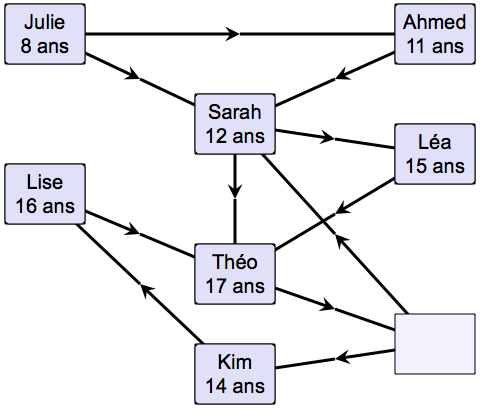

Solution
Pour obtenir la solution, on place les personnes une par une par ordre d'âge, intuitivement « en suivant l'ordre des flèches ». Plus précisément, on remplit à chaque fois une case vérifiant la propriété suivante : s'il y a des flèches qui arrivent à cette case, alors les cases d'où viennent les flèches sont déjà remplies.

Le schéma avec des flèches représente ce que l'on appelle un « graphe ».
Ce graphe représente des suites de de flèches qui tournent en rond, que l'on appelle des « cycles »
Dans le graphe considéré, il y a deux cycles : le cycle rouge (passant par les cases marquées B, C, et E), et le cycle bleu (passant par les cases marquées A, C, E, et D).
Sur un cycle, il n'est pas possible de mettre une personne sur chacune des cases, sinon forcément une des relations d'âges ne sera pas respectée. Donc, sur chacun des deux cycles, il faut qu'il y ait impérativement au moins une case vide.
Comme on ne peut laisser qu'une seule case vide, il faut que cette case se trouve sur les deux cycles à la fois. La case vide est donc soit E (solution 1), soit C (solution 2).
| Solution 1 : | Solution 2 : |
|  |  |
C'est de l'informatique
Les flèches représentent ici des contraintes d'âges, mais elles pourraient représenter n'importe quel type de relation entre des objets.
Par exemple, les cases peuvent représenter des opérations à effectuer pour construire une maison et les flèches représenter des contraintes sur quelle opération doit être réalisée avant telle autre. Par exemple, il faut construire les murs avant de poser le toit. Il est cependant possible que des actions ne soient pas contraintes. Par exemple, aménager le jardin et décorer la maison sont deux tâches que l'on peut faire dans n'importe quel ordre, voir même en parallèle.
Si une seule personne veut effectuer toutes les opérations, elle peut vouloir mettre dans un ordre particulier toutes les opérations à effectuer. Il y a plusieurs ordres possibles, mais tout ce qui compte au final, c'est que l'ordre choisi respecte bien les contraintes représentées par les flèches.
Choisir un ordre particulier est une opération que l'on appelle « tri topologique », et qui est très utile en informatique. Un ordinateur est capable de construire un tri topologique en quelques secondes, même lorsqu'il y a des milliards de flèches.